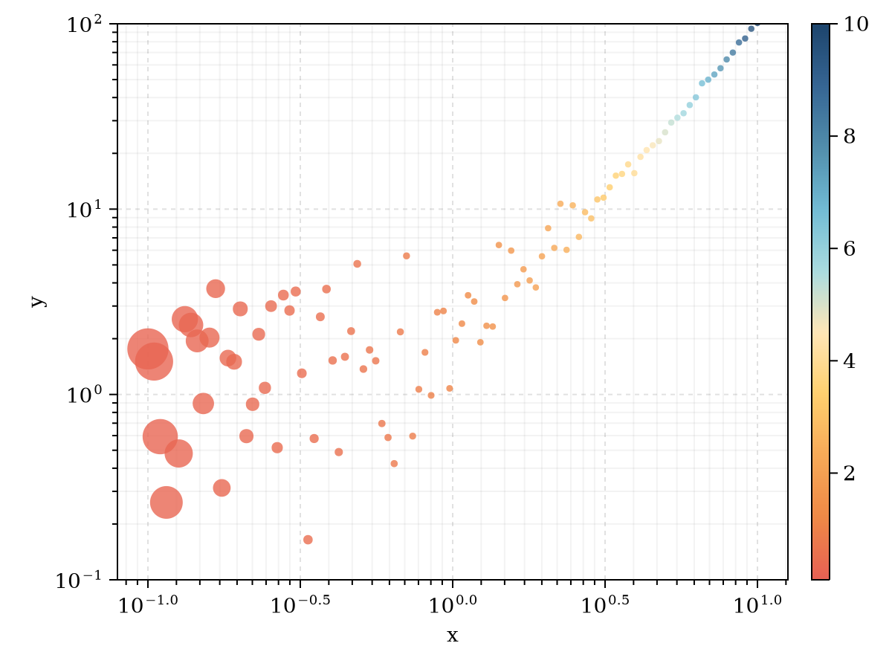
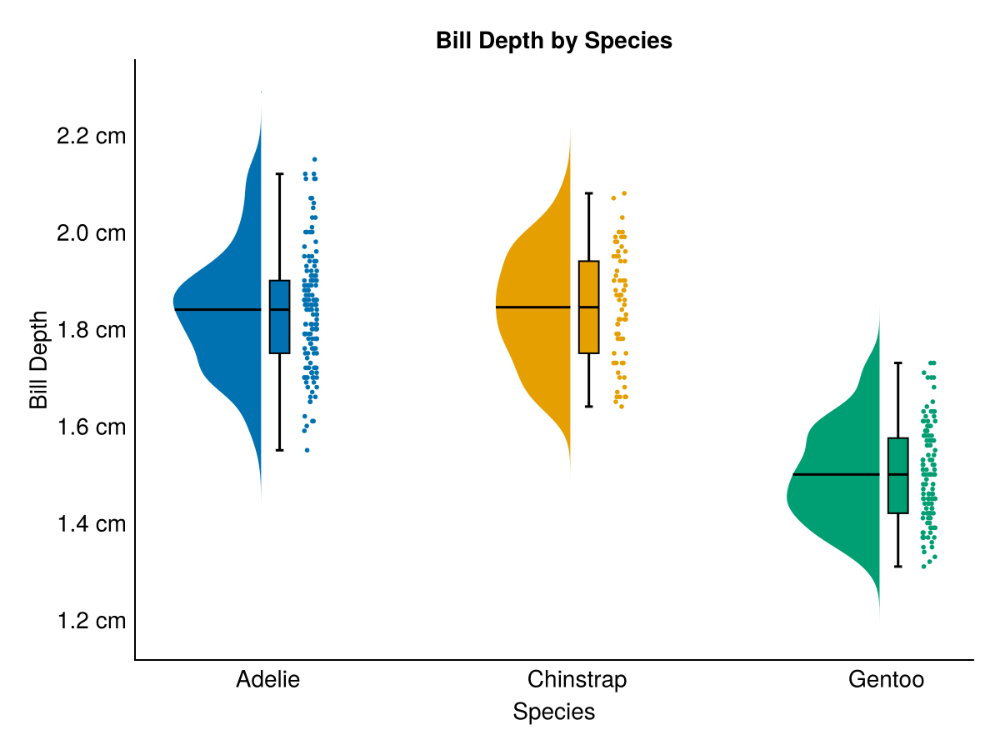
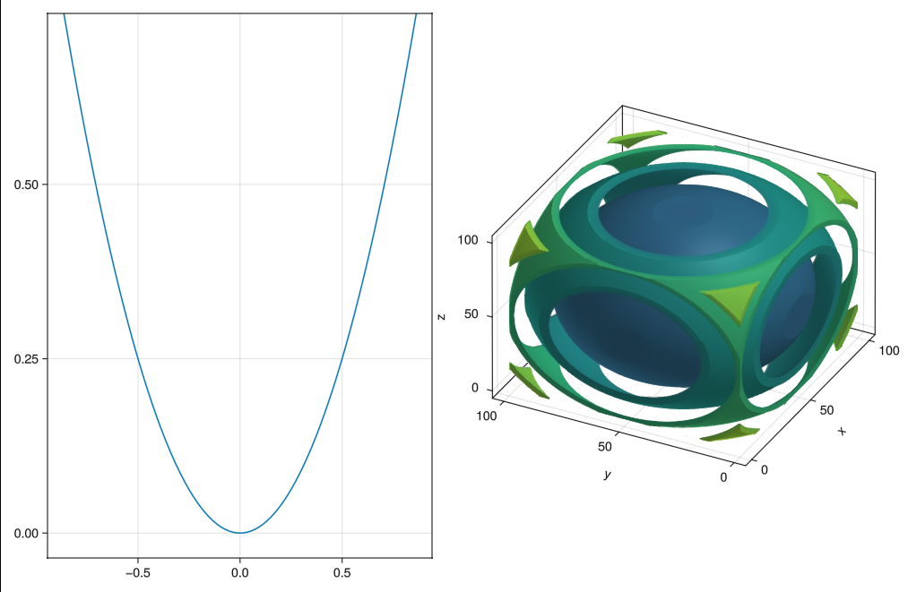

What is TidierPlots.jl?¤
TidierPlots.jl is a 100% Julia implementation of the R package ggplot2 powered by Makie.jl.
TidierPlots.jl has three goals, which differentiate it from other plotting packages in Julia:
- Stick as closely to tidyverse syntax and behaviour as possible: Whereas other meta-packages introduce Julia-centric idioms for working with plots, this package’s goal is to reimplement ggplot in Julia. This currently just means that
TidierPlots.jlgives the option for specifyingaeswith the macro@esto allow unquoted column references, but the use of macros may need to expand as more features are added. - Stay as compatible as possible with Makie.jl This package is meant to be a thin wrapper around Makie's SpecApi syntax to help introduce R users to plotting in Julia.
- To Extend ggplot using julia-specific features where appropriate as long as this does not confict with the first two goals. The package aims to behave exactly like ggplot unless told otherwise. Additional options and parameters that are not present in ggplot may be added, but options that are present in R's ggplot should behave the way they do in R.
Installation¤
For the "stable" version, access the Pkg interface by pressing ] at the julia> prompt, then type add TidierPlots.
For the development version:
using Pkg
Pkg.add(url="https://github.com/TidierOrg/TidierPlots.jl")
TidierPlots will also be installed automatically if you add Tidier.
What functions does TidierPlots.jl support?¤
TidierPlots.jl currently supports the top-level function ggplot(), plus:
Geoms:
geom_pointgeom_errorbargeom_path,geom_line, andgeom_stepgeom_bar,geom_col, andgeom_histogramgeom_boxplotandgeom_violingeom_tilegeom_densitygeom_textandgeom_label
Makie Themes:
theme_ggplot2()(the default)theme_dark()theme_black()theme_light()theme_minimal()
Colour Scales:
scale_color_manual()- setvalues = c(c1, c2, c3, ...), accepts anything that can be parsed as a color by Colors.jl (named colors, hex values, etc.)scale_color_[discrete|continuous|binned]()- setpalette =a ColorSchemes.jl palette as a string or symbol. Also accepts ColorSchemes.jl color scheme objects.
Additional Elements:
scale_[x|y]_[continuous|log[ |2|10]|logit|pseudolog10|sqrt|reverse]labslims
Display Options for Quarto, Jupyter, and Pluto.jl¤
Use the function TidierPlots_set(option::String, value::Bool) to control display options. The following options are supported:
- "plot_show" (default true). Enables
ggplot-like behaviour where plots are displayed when created. - "plot_log" (default true). Prints a text summary of the properties of the ggplot
You will likely want to disable both of these if you are working in a notebook environment. In Pluto.jl, you can get interactive plots (scroll, zoom, labels, etc.) using WGLMakie by including WGLMakie.activate!() as the first cell after your imports.
Differences from ggplot2¤
The goal of this package is to allow you to write code that is as similar to ggplot2 code as possible. The only difference in basic usage is in the aes() function. TidierPlots.jl accepts two forms for aes specification, neither of which is exactly the same as ggplot2.
- Option 1:
aesfunction, julia-style columns, e.g.aes(x = :x, y = :y)oraes(:x, :y) - Option 2:
@aes(or@es) macro, aes as in ggplot, e.g.@aes(x = x, y = y)or@aes(x, y)
If you use Option 1, functions can be applied to columns with the => operator to form a Pair{Symbol, Function}, similar to how DataFrames.jl functions work.
my_fn(x) = x ./ 10
geom_point(aes(x = :x => my_fn))
Functions can take multiple columns as input. The following geom_point specification results in x / y (where x and y are the names of columns in a DataFrame) being plotted as the x axis of the graph:
my_new_fn(x, y) = x ./ y
geom_point(aes(x = [:x, :y] => my_new_fn))
With Option 2, functions will be interpreted using TidierData.jl:
# Macro aes equivalents to the above examples
geom_point(@aes(x = x / 10))
geom_point(@aes(x = x / y))
Why would I use this instead of ggplot2?¤
Right now, you probably wouldn't. This package is still early in development, and is not ready for production use. However, there are a couple of advantages already and the list will hopefully get longer over time.
Flexible access to Makie options¤
Access to all axis and plot options from Makie lets you use Makie's extensive capabilities for plot customization (example adapted from beautiful.makie.org):
using Random, DataFrames
using TidierPlots
import Makie.IntervalsBetween, Makie.Attributes
Random.seed!(123)
xs = 10 .^ (range(-1, stop=1, length=100))
df = DataFrame(x = xs,
y = xs .^ 2 .+ abs.(2 * randn(length(xs))),
size = (xs .^ 2/3)[end:-1:1] .+ 6)
beautiful_makie_theme = Attributes(
fonts=(;regular="CMU Serif"),
)
ggplot(df) +
geom_point(aes(x = :x, y = :y, size = :size, color = :x), alpha = 0.8) +
scale_x_log10() +
scale_y_log10() +
labs(x = "x", y = "y") +
lims(y = c(.1, 100)) +
scale_color_continuous(palette = "Hiroshige", name = "") +
theme(
xminorticksvisible=true,
xminorgridvisible=true,
yminorticksvisible=true,
yminorgridvisible=true,
xminorticks=IntervalsBetween(9),
yminorticks=IntervalsBetween(9),
backgroundcolor = :transparent,
xgridstyle=:dash,
ygridstyle=:dash
) + beautiful_makie_theme

Built-in Support for Plot Layouts¤
Combine plots with a {patchwork}-inspired syntax to create complex layouts (adapted from beautiful.makie.org):
Random.seed!(123)
n = 200
df = DataFrame(x = randn(n) / 2, y = randn(n))
top = ggplot(df) +
geom_histogram(aes(x = :x), fill = :orangered, strokewidth = 0.5) +
lims(x = c(-4, 4)) +
theme(xticklabelsvisible = false, xgridvisible = false) +
beautiful_makie_theme
right = ggplot(df) +
geom_histogram(aes(x = :y), fill = :dodgerblue,
direction = :x, strokewidth = 0.5) +
lims(y = c(-3, 3)) +
theme(yticklabelsvisible = false, ygridvisible = false) +
beautiful_makie_theme
middle = ggplot(df) + geom_point(aes(x = :x, y = :y), size = 10) +
lims(x = c(-4, 4), y = c(-3, 3)) + labs(x = "x", y = "y") +
beautiful_makie_theme
blank = ggplot() +
theme(xticklabelsvisible = false, xgridvisible = false, yticklabelsvisible = false,
ygridvisible = false, xtickcolor = :transparent, ytickcolor = :transparent,
bottomspinevisible = false, topspinevisible = false, rightspinevisible = false,
leftspinevisible = false) + beautiful_makie_theme
top + blank + middle + right +
plot_layout(ncol = 2, nrow = 2, widths = c(3, 1), heights = c(1, 2))

Easy Extensions with Makie¤
Add basic support for any Makie plot using geom_template(name, required_aes, makie_plot). It will inherit support for most optional aesthetics and arguments automatically:
geom_raincloud = geom_template("geom_raincloud", ["x", "y"], :RainClouds)
ggplot(penguins) +
geom_raincloud(@aes(x = species, y = bill_depth_mm/10, color = species), size = 4) +
scale_y_continuous(labels = "{:.1f} cm") +
labs(title = "Bill Depth by Species", x = "Species", y = "Bill Depth") +
theme_minimal()

Mix Makie Plots and TidierPlots¤
TidierPlots is creating Makie SpecApi.GridLayout objects under the hood, so you can easily combine TidierPlots output with Makie output for more flexibility:
using WGLMakie
import Makie.SpecApi as S
using TidierPlots
using DataFrames
r = LinRange(-1, 1, 100)
cube = [(x .^ 2 + y .^ 2 + z .^ 2) for x = r, y = r, z = r]
cube_contour = S.Contour(cube, alpha=0.5)
ax_cube = S.Axis3(; plots=[cube_contour], protrusions = (50, 20, 10, 0))
d = DataFrame(r = r, r2 = r .^ 2)
gg = ggplot(d) + geom_line(aes(x = :r, y = :r2))
plot(S.GridLayout([TidierPlots.as_GridLayout(gg) ax_cube]))

See the documentation for more information and examples.
What's New¤
See NEWS.md for the latest updates.
What's Missing¤
Lots! Please feel free to file an issue and/or submit a pull request to add additional ggplot-based features. If it is in ggplot, we want to add it.